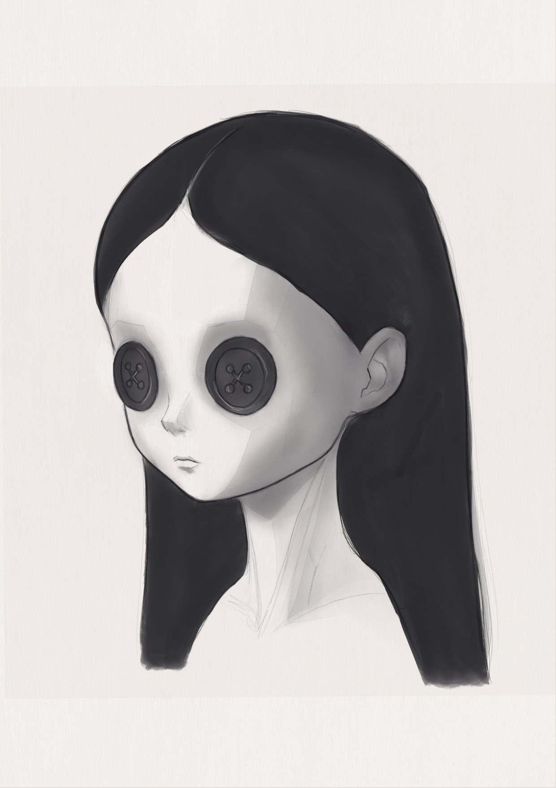
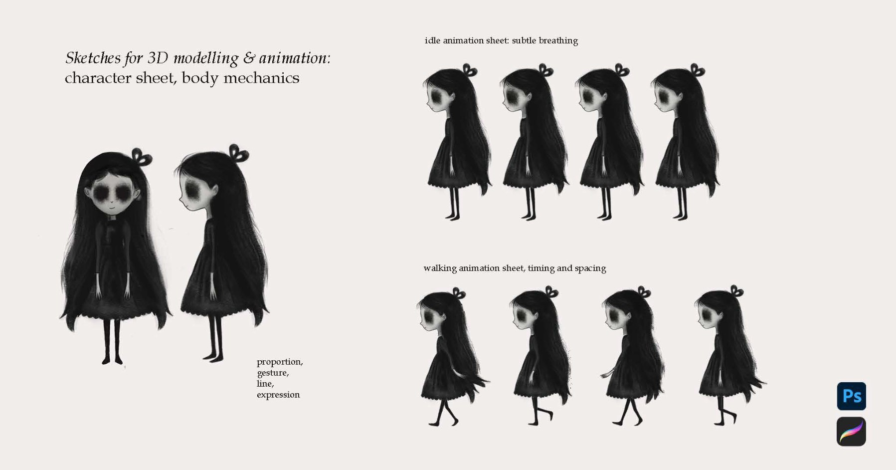
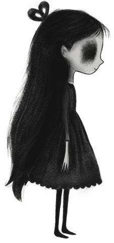
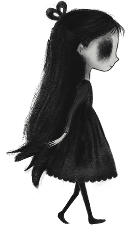
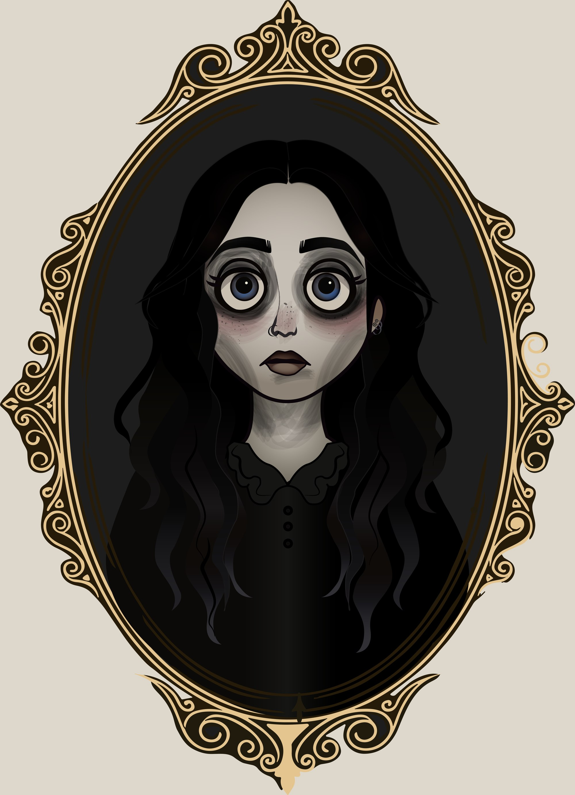
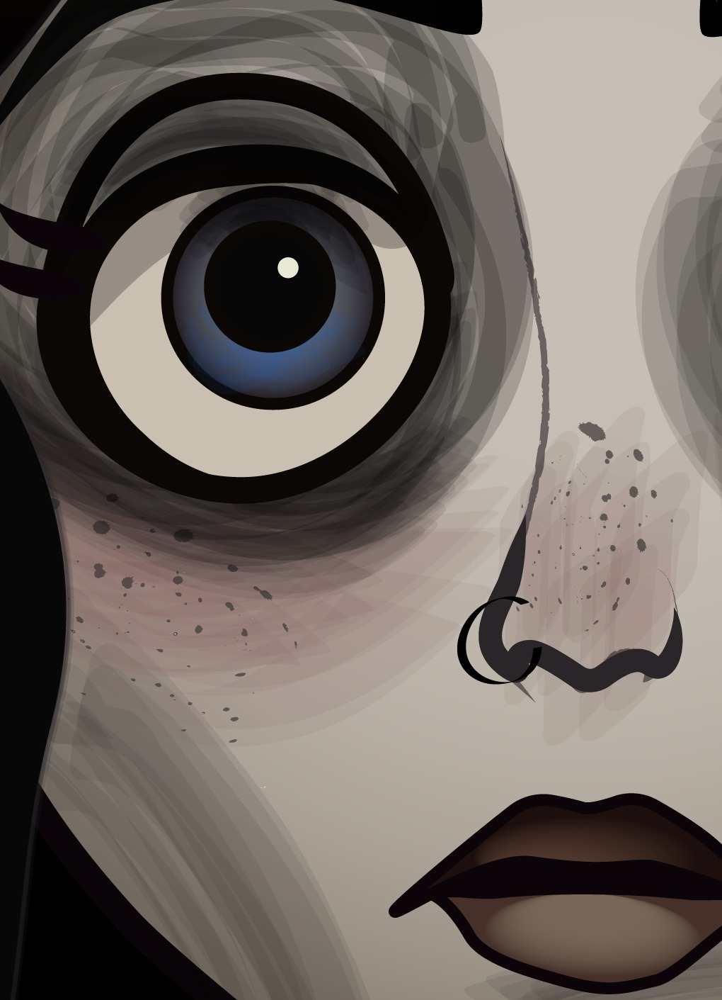
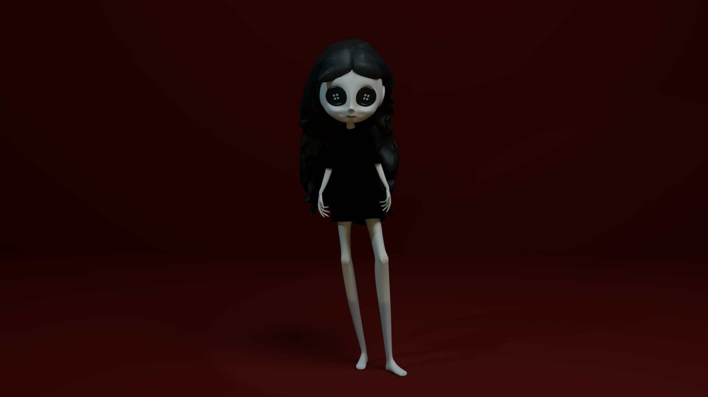
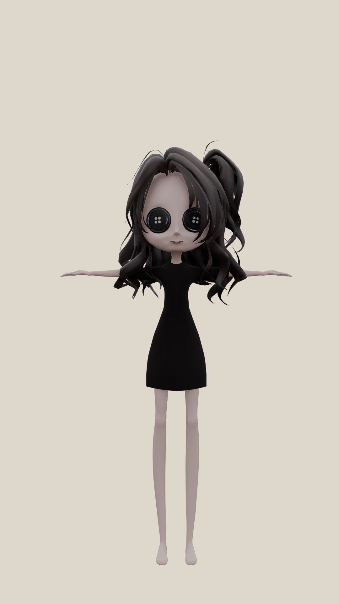

Violet
One gothic character, carried from a life-drawing sketch to a live-action composite and a playable game. Each stage was a different module and a different tool, but always the same girl: pale, hollow-eyed, lost in her own hair.
The brief
Develop an original character from first sketches through to final digital outcomes, integrating digital applications at every stage.
The idea
I wanted a character that reads in silhouette alone: long black hair taking up most of the body, a small pale face and thin limbs. Eyes became the motif that runs through everything, from eyeball studies to the eyeball shop game.
1. Drawing as foundation
Observation and anatomy came first: eye studies, a rose drawn as both structure and gesture, and primitive forms to work out materials and shading before anything went 3D.

2. Body mechanics and animation
A character sheet set her proportions and posture, then idle and walk sheets worked out timing and spacing. These became the reference for the 3D model and the asset for the 2D game.



3. Vector portrait
A second, more detailed version of Violet, rebuilt in Illustrator for editorial use.


4. 3D model and rig
Modelled in Blender from the sheets, with topology adjusted for Mixamo: edge loops at the joints and clean flow through the hands. The pale skin uses subsurface scattering, and the hair and the dress each have their own shader.


5. VFX composite
The rigged character was integrated into live-action footage. The plate is motion-tracked so the camera move carries through to the CG, and the render is lit and graded to sit inside the shot.
6. 2D and 3D game: Eyeball Shop
The same character became a playable shopkeeper. I built it first in 2D, then as a full 3D Unity game in C#: an NPC trader on a NavMesh, collectibles, an inventory and EXP system, and gold timers.
Credits
- Role
- Character Artist (concept, illustration, modelling, animation, compositing, game development)
- Year
- 2025–2026
- Tools
- Procreate, Photoshop, Illustrator, Blender, Mixamo, After Effects, DaVinci Resolve, Unity
- Animation
- Mixamo (Adobe)